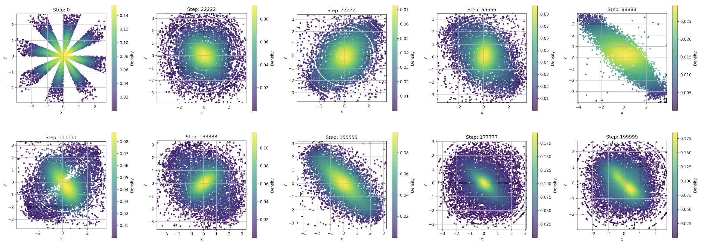

Machine-verifies in Lean 4 the pushforward and energy-minimization properties of the proposed Wristband Gaussian Loss.
Abstract
We present the Wristband Gaussian Loss, a deterministic batch loss for Gaussianizing point embeddings without sampling, KL terms, or iterative transport. Each $x \in \mathbb{R}^d$ is mapped to a direction $u = x/\|x\|$ and a CDF-transformed radius $t = F_{χ^2_d}(\|x\|^2)$ on the wristband $S^{d-1} \times [0,1]$. We prove (and machine-verify in Lean~4) that for $d \ge 2$ the pushforward wristband map equals $σ_{d-1} \otimes \mathrm{Unif}[0,1]$ iff the source is $\mathcal{N}(0, I_d)$, and that the Neumann-reflected wristband repulsion energy is uniquely minimized at the uniform target. We compute this reflected-kernel objective in two ways: a nearest three-image pairwise truncation at $O(N^2 d)$, and a spectral Neumann path joining angular and radial Mercer modes (spherical-harmonic and cosine) at $O(N d K)$, with empirically matched gradients. A 1D Wasserstein radial term and a moment penalty serve as finite-sample accelerators with the same optimum, and Monte-Carlo null calibration turns the components into a single standardized statistic. We evaluate direct point-cloud Gaussianization with a calibrated barycentric $W_2$ score: a deterministic Gaussian reference batch is built by recursive Hungarian averaging, with each method reported as a $z$-score against same-size Gaussian batches. On the axis-uniform X benchmark, Wristband is competitive in 2D and gives the best 10D score. On a harder radial--angular-copula impostor whose Gaussian radial and angular marginals are correct but dependent, Wristband gives the best 10D and 128D scores. Coupled with learnable-key Euclidean attention and exact invertible flows, the resulting Deterministic Gaussian Autoencoder delivers a Gaussian-latent interface for counterfactual sampling with independent factors and a context/residual construction for dependent factors.
Problem
Deterministic encoders that produce Gaussian-distributed latents are desirable for composable, independent factor representations, but existing losses (moment matching, MMD, sliced Wasserstein, radial-VCReg) each fail on at least one axis of sufficiency, dimensional stability, or GPU efficiency.
Approach
The Wristband Gaussian Loss decomposes each embedding x into a direction u = x/||x|| and a CDF-transformed radius t on the product space S^{d-1} x [0,1]. The key theorem (proved and machine-verified in Lean 4) states that the pushforward equals the uniform product measure iff the source is N(0, I_d). A Neumann-reflected repulsion kernel on this wristband, plus a 1D Wasserstein radial term and moment penalty, forms the training loss. Both an O(N^2 d) pairwise and O(NdK) spectral computation are provided.
Results
On the axis-uniform benchmark, Wristband is competitive in 2D and gives the best score in 10D. On a harder radial-angular-copula impostor benchmark, it gives the best 10D and 128D scores. The full Deterministic Gaussian Autoencoder delivers a Gaussian-latent interface for counterfactual sampling with independent factors.

Figure 3: This shows the Radial-VCReg loss fails to gaussianize the sunshine distribution point cloud even after 200k steps, with snapshots of the point cloud at different steps. In Radial-VCReg [ 14 ] Kuang et al included this adversarial example of an elliptically symmetric distribution that is not Gaussian to illustrate the limitations of the Radial-VCReg loss. Even after an infinite number of